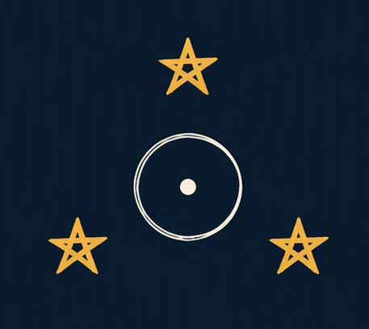

☉
Sol em
↗Gemeos
Identidade, vitalidade e o centro da sua expressao.

Eu e as EstrelasPreencha os dados para montar uma leitura inicial do seu mapa.
Identidade, vitalidade e o centro da sua expressao.
O mundo emocional e aquilo que traz conforto.
A primeira impressao e o jeito de entrar na vida.
Posições às 00:00 no horário da localidade escolhida. R indica planeta retrógrado.
Períodos entre o último aspecto da Lua e a entrada no próximo signo, no horário da localidade escolhida.